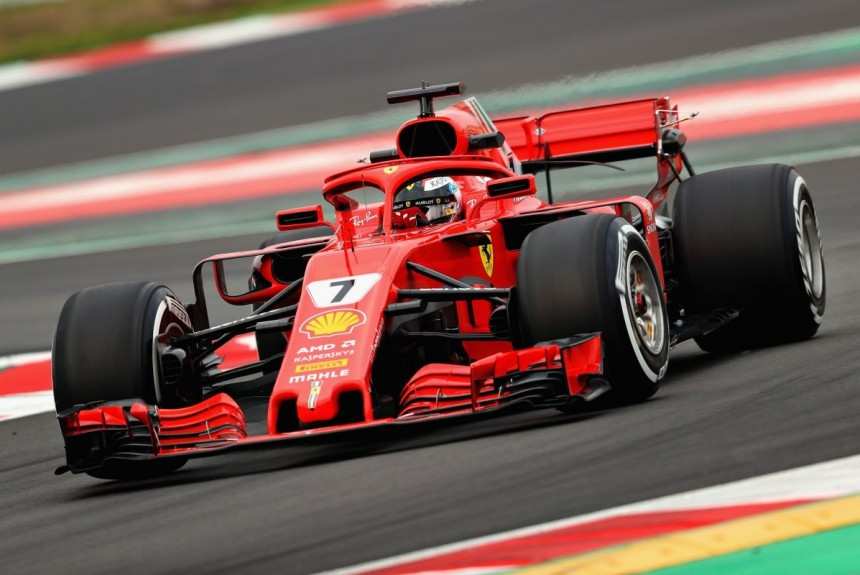

Сегодня есть много видов автогонок, устраиваемых не только на специальных трасах, но и просто на улицах городов. К примеру, стрит рэйсинг, или, как этот вид еще называют – уличные гонки. Их несколько видов. Эти гонки славятся тем, что они не легальные, тут нет определенных правил, нет требований к машинам, если не считать возможности быстрого разгона. Чтобы участвовать в подобных гонках, нужно приобрести отличное авто.
Чаще всего гонщики интересуются, где можно купить определенный тип авто. Так, продажа машин в тюмени или в другом городе заинтересует гонщиков, если предлагаемый товар будет отвечать всем требования гонщиков. О месте проведения уличных гонок можно узнать из различных источников, но чаще всего эта информация передается по интернету, или через массовую рассылку смс всем участникам соревнований. Так, чтобы провести дрэг рейсинг, для начала необходимо отыскать в Тюмени ровный участок дороги с твердым покрытием, длиной в полкилометра. В одном заезде в таких гонках принимают участие два автомобиля, причем разгон тут играет не последнюю роль, поэтому машина должна набирать сто километров за миллисекунды, и чем быстрее разгонится, тем больше шансов выиграть гонку.
Такие машины часто продаются, их можно приобрести не только в автосалонах, но и с рук, то есть поддержанные. Есть специальные доски, где размещаются бесплатные объявления тюмень, форумы этого города, именно там можно найти подобного типа автомобили. Кроме того, можно так же приобрести автомобиль, который вполне сможет превосходно показать себя на дрифтинге. Здесь главное, чтобы автомобиль был большой мощности, свыше четырехсот лошадей. Скорость, при которой осуществляется занос, обычно превышает сто километров в час. Такие гонки нужно только видеть.
Чтобы обзавестись машиной для таких гонок можно так же поискать в сети те, сто предлагают доски объявлений, форумы города. Помимо этих сведений, в интернете можно найти и другую информацию, которая говорит о предлагаемой продукции, о продавце. К примеру, вы ищите где продается детская мебель в тюмени, всю информацию о торговых точках с такого рода товаром можно получить в сети. С машинами дело обстоит несколько иначе. Помимо предложений приобрести авто в автосалоне, можно так же узнать, где расположенные комиссионки, а так же кто продает машины с рук, то есть найти координаты автовладельцев.